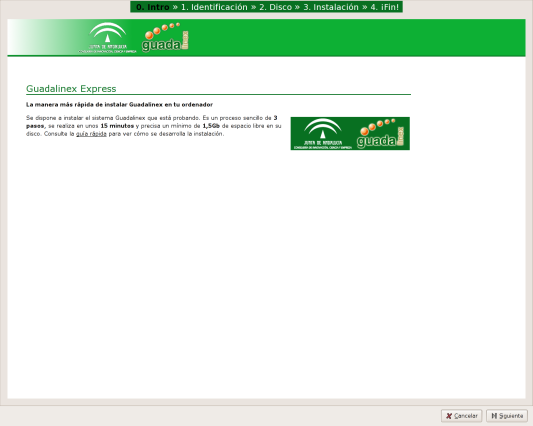
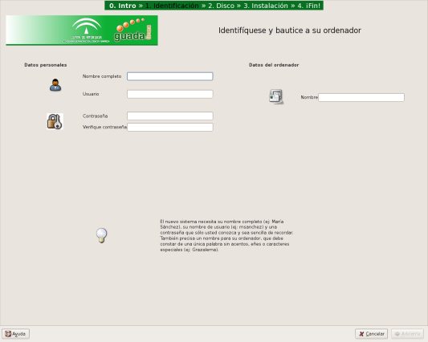
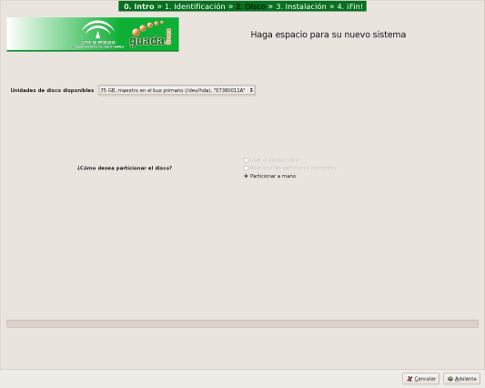
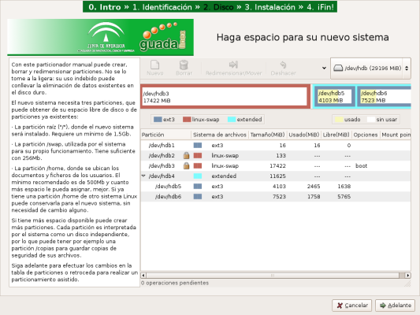
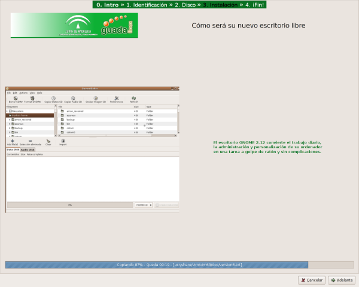
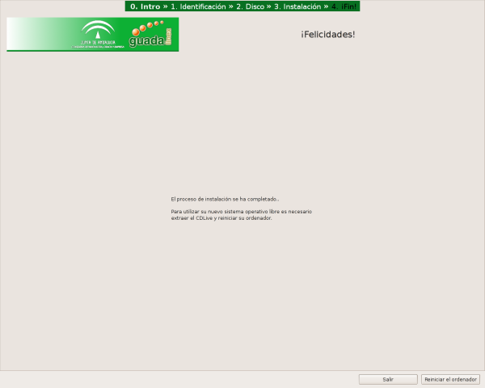

0. Intro
La página que acaba de visitar.
Información básica, enlace a esta guía e inicio del proceso de instalación.
|  |
1. Identificación
Introducción de su nombre completo,
nombre de usuario, contraseña y el nombre de su ordenador.
|  |
2. Disco
El instalador intenta reunir
automáticamente el espacio de disco necesario para su nuevo sistema.
|  |
Puede organizar su espacio de disco
manualmente, si lo prefiere.
|  |
3. Instalación
Aproximadamente 15 minutes de copia
automática de archivos. Puede saber más sobre el sistema que se está
instalando a través de una presentación visual simultánea. O puede levantarse
e ir a tomar algo.
|  |
4. ¡Fin!
Fin de la instalación. Reinicie su
ordenador y empiece su nueva historia de amor con Guadalinex.
|  |